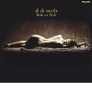

|
| Hear and See a small video clip of Al. (907k-Quicktime .MOV) |
| Hear and See a small video clip of Al. (345k-Windows Media Video .asf) |
|
| Hear and See a small video clip of Al. (907k-Quicktime .MOV) |
| Hear and See a small video clip of Al. (345k-Windows Media Video .asf) |
| Hi Al Fans!! Please understand that this site
is not his official web site. My site is a fan site only. |
| NEW!! ----> The Al Di Meola Fan Bulletin Board can be reached from the Links page. |
 |
Al Di Meola's
New Release On Telarc "Flesh On Flesh" -- In Stores
August 27th 2002 Al Di Meola Flesh on Flesh (Telarc Jazz) On Flesh on Flesh, Al Di Meola pushes the musical envelope in both directions: exploring new avenues of cross-cultural expression while reaching into his own storied past to create a new and distinctly personal statement. In stores 8/27/02 |
|
For over a quarter of a century, guitarist Al Di Meola has been a trailblazer. Flesh on Flesh, finds him pushing the musical envelope in both directions: exploring new avenues of cross-cultural expression while reaching into his own storied past to create a new and distinctly personal statement. For Flesh on Flesh, Di Meola has gathered a diverse and highly talented supporting cast of world-class musicians, including bassist Anthony Jackson, pianist Gonzalo Rubalcaba, flutist Alejandro Santos and World Sinfonia members Gumbi Ortiz on percussion and Mario Parmisano on keyboards. In addition to contributing five originals, Di Meola also updates compositions by pianist Chick Corea, Argentinian tango master Astor Piazzolla and Brazilian guitarist Egberto Gismonti. “What I like most about this record is that we were able to capture a phenomenal sound playing live in the studio,” Di Meola says. “I think the energy and excitement is several notches up, and the fact that I’m playing electric (mixed with acoustic) is a real plus. That element, along with the driving rhythms and drums, is very exciting.” Di Meola’s electric guitar playing is what first brought him an international following, dating back to 1974 when Corea tapped the young Berklee student as a charter member of the seminal fusion group Return to Forever. Flesh on Flesh includes Corea’s composition “Senor Mouse” with Di Meola on Fender Stratocaster, one of the few times he has played that particular instrument. Di Meola also plays drums, his first instrument, on the track. Besides his Strat, he employs an array of different guitars, including a 1958 Les Paul, a Conde acoustic guitar and a Godin electro-acoustic guitar, as well as Ovation guitars and the Roland VG-88 guitar system. Guitar wizardry is just one part of the musical equation that makes Flesh on Flesh so compelling. Special guest pianist Rubalcaba appears on several tracks. “It’s always been a real dream of mine to record with him,” notes Di Meola. Another star is bassist Jackson, who played on Di Meola’s Elegant Gypsy album in the mid-80s. They hadn’t worked together in nearly 15 years. Flesh on Flesh features compositions from two of his favorite composers: Piazzolla and Gismonti. Di Meola considers Piazzolla a hero and says of his music, “I just can’t stop—I’m addicted.” On “Fugata,” the late composer’s material is interpreted respectfully by Di Meola, but with an added twist. “What I like doing with his tunes is changing the syncopation of the rhythm. It winds up sounding like a cross between Buenos Aires and Havana.” Di Meola’s treatment of Gismonti’s composition “Meninas” is also very special, but for more personal reasons. “I’d never recorded anything by him, but I’ve always been a big fan. Always.” He adds, “This particular tune has got to be my favorite piece of his. I’ve always melted when I heard it. The translation of the title is ‘little girls’ and I know he wrote it with his children in mind. I also have two little girls, and there are certain melodies in the tune that make me think of them every time I’m away. It’s a harmonically beautiful piece that contains some of my favorite melodies.” For Flesh on Flesh, the guitarist recruited Grammy-winning recording engineer Roger Nichols (Steely Dan, Beach Boys) to add his expertise and help create a superior sound. “Roger is a legendary engineer, and we were very happy to have him on this project,” says Di Meola. “We had Roger record the basic tracks and that to me is the most important thing—laying the foundation.” With his fourth Telarc release, Di Meola continues to break new ground in combining jazz with the diverse musics of the world. Flesh on Flesh is the latest step in that never-ending journey of self-discovery. |
|
A native of New Jersey, Al Di Meola replaced Bill Conners in Chick Corea's "Return To Forever" at age 19. he left in 1976 after recording three albums with the group. During the four years following , his concert tours and solo LP's (including Land of the Midnight Sun, Elegant Gypsy, Casino, and Splendido Hotel) has brought him four straight wins as Best Jazz Guitarist in the Guitar Player Readers Poll, as well as three awards for the Best Guitar Albums.
His albums have explored a variety of styles,but his best liked albums are the latin influenced fusion albums which are his first through Tour De Force, plus the recent Kiss My Axe (you'll have to forgive the title). Cielo E Terra and Soaring Through a Dream explore world musics, while Scenario and Tirami Su have some of the edge removed. The fusion albums have a slight degree of sameness. He just doesn't seem to be able to channel that fiery style into any stylistic changes. But that doesn't mean he's not worth hearing! Get Elegant Gypsy (my favorite) or Casino. You won't be disappointed if you like guitar fusion or just good guitar ability Electric Rendezvous and Kiss My Axe are incredible albums from one of the best fusion guitarists alive.
Di Meola, Al [USA] [solo]
Land of the Midnight Sun (76),
Elegant Gypsy (77), Casino (78), Splendido Hotel (80), Electric Rendezvous
(82), Tour De Force - Live (82), Scenario (83), Cielo E Terra (85), Soaring
Through a Dream (85), Tirami Su (87), World Sinfonia (90) Kiss My Axe (91),
Orange and Blue (94), World Sinfonia II - Heart of the Immigrants (93) , Al Di
Meola Play Piazzolla (96), The Infinite
Desire (98) Winter Nights (99), Flesh on Flesh (2002).
Collaboration Works
Friday Night in San Francisco (81),
Passion, Grace & Fire (83) and Rite Of Strings , The
Guitar Trio (96)
{kind=link}
{kind=link}